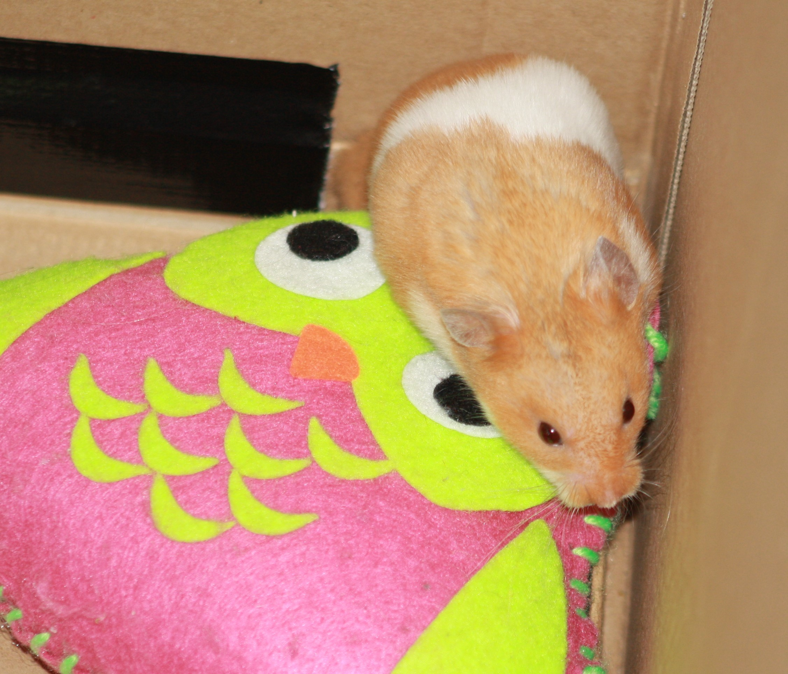

21-Jun-2017 | Milku
We've used eggs to condition our hair.
The quest for human beauty continues on Day 21 of 30 Days Wild as my humans have been trying to improve the condition of their hair. I reminded them that my fur is beautifully maintained and that I didn't require the application of any of their concoctions. Amazingly, they did take notice and one of the smaller humans volunteered for the treatment.
Her sister acquired a couple of eggs, cracked them into a bowl and made sure they were well beaten.
The willing victim volunteer, brushed her hair and allowed her Mum and sister to rub the beaten eggs into
her hair and scalp.
They they covered the hair with a towel and left the eggs to work their magic. A period of half an hour was recommended, but the little human had to finish watching a film before she'd rinse her hair so I think the treatment lasted over an hour.
You're probably wondering why they chose to use eggs. Due to their high levels of Omega-3 fatty acids, xanthophylls, immunoglobulins, vitamins and other micro-nutrients, eggs are supposed to be good for strengthening the hair and hair follicles. My humans also expected the hair to become less frizzy and grow faster. They are so optimistic!
I think it worked...a bit. All the hair straightening and the like that goes on has left quite a bit of damage so the process will have to be repeated many times. They should just follow the same beauty regime that I have... avoid using any products and just complete a daily run through their fur with their fingers and spit.
